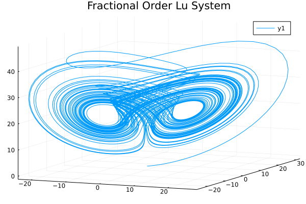

Fractional Order Lu System
using FractionalDiffEq, Plots
h=0.005
alpha = [0.985, 0.99, 0.98]
x0 = [0.2, 0.5, 0.3]
tspan = (0, 60)
function Lu!(du, u, p, t)
a, b, c = 36, 3, 20
du[1] = a*(u[2]-u[1])
du[2] = -u[1]*u[3]+c*u[2]
du[3] = u[1]*u[2]-b*u[3]
end
prob = FODESystem(Lu!, alpha, x0, tspan)
sol = solve(prob, h, GL())
plot(sol, vars=(1,2,3), title="Fractional Order Lu System")
This page was generated using DemoCards.jl.